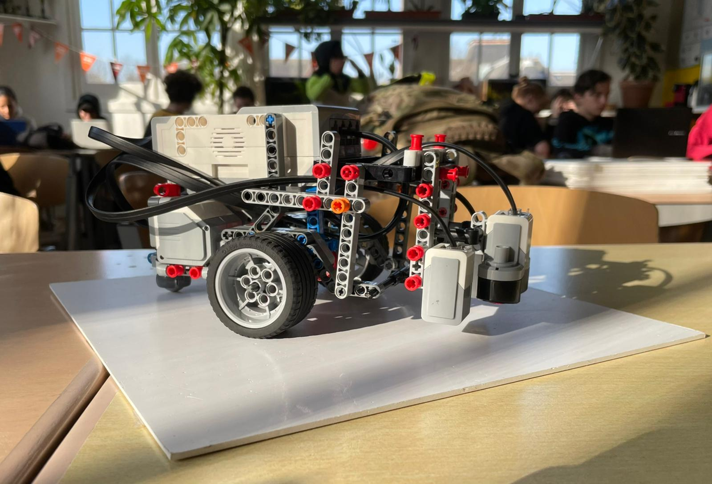
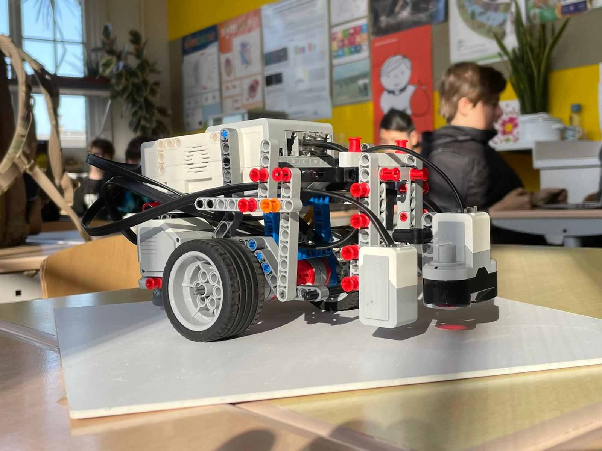

Hello, we are students at MML - Eline, Ira and Jasper. We worked on this project for a month. We programmed a robot to create a safer society. Our robot - ECR2.0 is created to find people that need help and bring them to a safe place. In our prototype people are represented as cans.
 